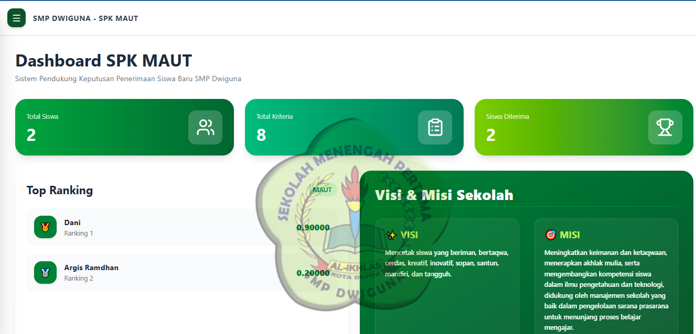
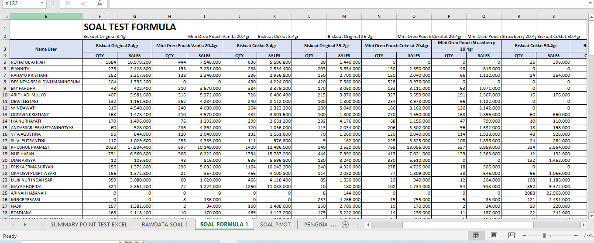

Halo, Saya
Muhamad Ramdani
Novfitra Fajrin
A fresh graduate with a functional understanding of UI/UX Design, Frontend Web Development, and data management using MS Office. Eager to learn, highly adaptable, and ready to explore new challenges and skills to contribute effectively in the professional world.
M. Ramdani Novfitra Fajrin
Fresh Graduate
Dedikasi Terhadap Kualitas & Efisiensi
Halo! Saya Muhamad Ramdani Novfitra Fajrin
Fresh graduate S1 Teknik Informatika dari Universitas Indraprasta PGRI dengan pengalaman PKL sebagai Admin Online di bidang digital printing serta pengalaman membangun aplikasi berbasis web melalui proyek Sistem Pendukung Keputusan (SPK) penerimaan siswa baru menggunakan metode MAUT. Memiliki kemampuan dalam pengembangan web, pengolahan data menggunakan Microsoft Office, serta pembuatan desain grafis berbasis referensi. Pribadi yang cepat belajar, disiplin, bertanggung jawab, adaptif, dan mampu bekerja dalam tim, serta memiliki motivasi untuk terus berkembang dan berkontribusi secara profesional di bidang administrasi, teknologi informasi, maupun desain grafis.
Desain Grafis
Merancang grafis, konten visual, dan antarmuka menggunakan Figma, Canva, maupun Adobe Photoshop secara profesional.
Frontend Web Development
Mengembangkan halaman web yang cepat, responsif di semua perangkat, dengan struktur kode murni (HTML/CSS/JS) yang bersih.
Microsoft Office Productivity
Menguasai pengolahan data spreadsheet (Excel), penyusunan dokumen laporan (Word), dan presentasi profesional (PowerPoint).
Kemampuan Utama Saya
HTML5 & Semantik
FrontendStruktur web semantik yang rapi, aksesibel, dan teroptimasi SEO.
CSS3 & Modern Layout
FrontendCSS Custom Properties, Flexbox, Grid, Glassmorphism, & Animasi CSS.
Adobe Illustrator
Desain GrafisDesain vektor profesional untuk logo, ilustrasi, dan materi grafis skala tinggi.
Microsoft Excel Advanced
MS OfficePengolahan rumus kompleks (VLOOKUP/XLOOKUP, IF, Pivot Table ).
Microsoft Word Professional
MS OfficePenyusunan dokumen resmi, surat formal, format laporan rapi, & Mail Merge.
Microsoft PowerPoint Design
MS OfficeDesain slide presentasi interaktif, visualisasi poin bisnis, & animasi transisi.
MySQL
DatabasePengelolaan basis data relasional, query kompleks, dan optimasi performa.
Komunikasi Efektif
Soft SkillMampu menyampaikan ide, berkolaborasi dengan tim, dan menyelaraskan kebutuhan proyek dengan jelas.
Problem Solving
Soft SkillMenganalisis akar masalah secara kritis dan merumuskan solusi yang praktis, efisien, serta berorientasi hasil.
Disiplin & Konsistensi
Soft SkillMenjaga ketepatan waktu, komitmen terhadap jadwal, dan konsistensi dalam setiap pekerjaan sehari-hari.
Tanggung Jawab & Integritas
Soft SkillBerkomitmen penuh pada tenggat waktu (deadline), menjaga kualitas hasil kerja.
Projek & Showcase Pilihan

SPK MAUT Web Dashboard
Dashboard Sistem Pendukung Keputusan (SPK) penerimaan siswa baru berbasis metode MAUT untuk SMP Dwiguna dengan visualisasi peringkat siswa dan integrasi data intuitif.

Automated Financial & Stock Report System
Template laporan keuangan dan manajemen stok barang otomatis di Microsoft Excel menggunakan formula pencarian otomatis, Pivot Table dinamis, dan visualisasi data.

Pengalaman & Pendidikan
Universitas Indraprasta PGRI
S1 Teknik Informatika • IPK 3.20
MA. AL-Khairiyah
Kuliah Kerja Praktek
1. Mengembangkan aplikasi perpustakaan berbasis desktop menggunakan Java (NetBeans) untuk mendigitalisasi proses sirkulasi peminjaman dan pengembalian buku.
2. Mengintegrasikan database untuk pengelolaan ratusan koleksi buku, pencatatan data anggota, dan kalkulasi denda otomatis. Membuat fitur cetak kartu anggota otomatis dan rekapitulasi laporan inventaris perpustakaan.
3. Membuat fitur cetak kartu anggota otomatis dan rekapitulasi laporan inventaris perpustakaan.
4. Membuat fitur laporan inventaris dan sirkulasi otomatis serta melaksanakan pengujian sistem dan pendampingan pengoperasian aplikasi untuk mempermudah pekerjaan staf perpustakaan
Smp Dwiguna
Tugas Akhir
1. Mengembangkan Sistem Pendukung Keputusan (SPK) berbasis web untuk seleksi penerimaan siswa baru menggunakan metode Multi-Attribute Utility Theory (MAUT).
2. Membangun tampilan antarmuka (frontend) menggunakan dasar React JS, HTML, dan CSS yang terintegrasi dengan backend (Node.js, Express.js) serta database MySQL.
3. Mengelola dan merancang fitur data siswa, kriteria, subkriteria, hingga proses perhitungan nilai akhir secara sistematis.
4. Mengembangkan fitur ekspor laporan hasil seleksi dalam format PDF yang siap cetak dan disesuaikan dengan standar format surat resmi serta kop surat sekolah.
Microsoft Office Data
Pengolahan Dokumen & Laporan Bisnis
Menyusun laporan data spreadsheet berformula presisi, dokumen administrasi rapi, dan slide presentasi yang siap pakai untuk kebutuhan profesional.
Mari Bekerja Sama
Lokasi
Indonesia 🇮🇩
Tersedia untuk Pekerjaan Remote / Hybrid